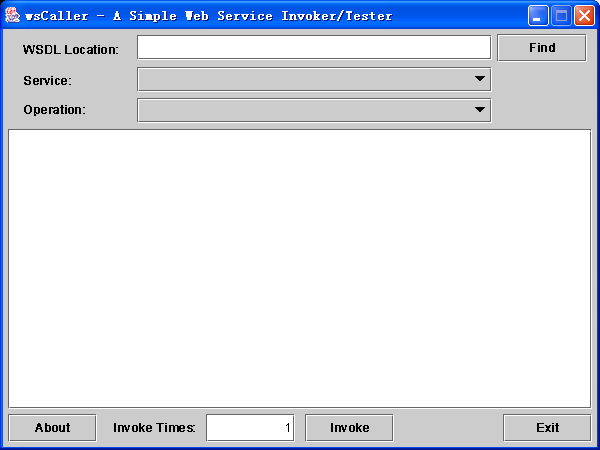
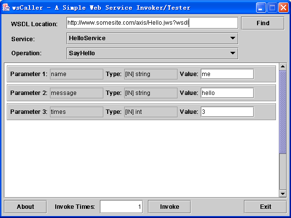
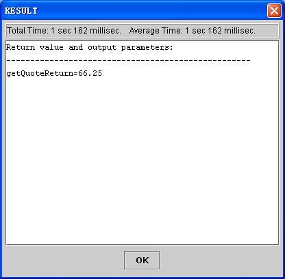

Web Service通用客户端和测试工具
wsCaller是使用Java语言编写的Web Service通用客户端和测试工具。wsCaller及其所有源代码的授权方式如下：
允许任何个人、学术机构、公司无偿获得、修改、使用、重新发布wsCaller软件及其源代码，并可以按照有偿或者无偿的方式发行基于wsCaller源代码的全部或部分内容开发的软件产品，――但行使以上权利时，须遵守以下约定：
1、重新发布wsCaller软件及其源代码时，不得隐去软件以及源代码中原有的版权信息和开发者标识。
2、发行基于wsCaller源代码的全部或部分内容开发的软件产品时，必须在产品的显著位置标明以下字样：
“本产品的一部分功能是基于王咏刚在wsCaller软件中的工作完成的”
3、在正式出版物中引用wsCaller的文档、源代码或注释内容的，应注明软件的原作者为王咏刚。
wsCaller可执行程序的发布方式为一个wsCaller.jar包，不包含Java运行环境。你可以把wsCaller.jar复制到任何安装了Java运行环境（要求安装JRE/JDK 1.3.1或更高版本）的计算机中，用以下命令运行wsCaller：
java -jar wsCaller.jar
使用wsCaller软件的方法非常简单，下面是wsCaller的主界面：

首先在WSDL Location输入框中输入你想调用或想测试的Web Service的WSDL位置，如“http://www.somesite.com/axis/services/StockQuoteService?wsdl”，然后点“Find”按钮。wsCaller就会检查你输入的URL地址，并获取Web Service的WSDL信息。如果信息获取成功，wsCaller会在Service和Operation下拉列表框中列出该位置提供的Web Service服务和服务中的所有可调用的方法。你可以在列表框中选择你要调用或测试的方法名称，选定后，wsCaller窗口中间的参数列表框就会列出该方法的所有参数，包括每个参数的名称、类型和参数值的输入框（只对[IN]或[IN, OUT]型的参数提供输入框）。你可以输入每个参数的取值。如下图：

这时，如果你想调用该方法并查看其结果的话，只要点下面的“Invoke”按钮就可以了。如果你想测试该方法的执行时间，则可以在“Invoke Times”框中指定重复调用的次数，然后再按“Invoke”按钮。wsCaller会自动调用你指定的方法，如果调用成功，wsCaller会显示结果对话框，其中包括调用该方法所花的总时间，每次调用的平均时间和该方法的返回值（包括返回值和所有输出型的参数）。如下图：

wsCaller软件是基于Axis库（Apache eXtensible Interaction System）开发的，Axis库的介绍及其版权信息请参见Apache Software Foundation的网站http://www.apache.org/。
有关wsCaller软件的更多信息请见王咏刚的个人主页http://www.contextfree.net/。
王咏刚
2003.06